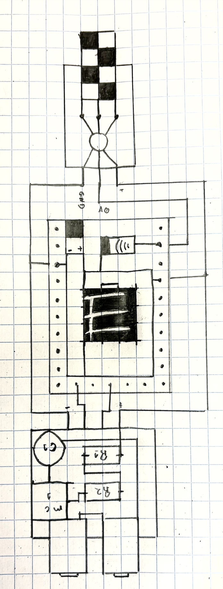
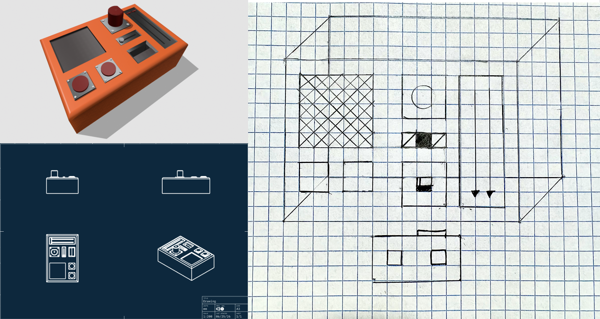

Week 1: Final Project Proposal
Project Idea 1:
This project deals with one the most interesting and relevant topics in digital fabrication,theconduction and the creation of electromagnetic fields. My main inspiration for this project was, strangely: the backrooms movie. One of the key plot points is the ASYNC conpany, a fictional corporation dealing with MRI technology and magnetic fields. this movie eventually led me to the idea of managing electrical discharge to move objects, and finaly to the idea of having precise control over different factors to accurately launch objects using electromagnetic fields.

Project Idea 2:
Although I am from brazil, I have been a spanish citizen for the past few years, and one thing you come to notice when living in spain is the extreme weather conditions during the summer and the impact they have on the environment. Forest fires are commonly seen and are devastating to the biodiversity of the iberian peninsula. These enviormental factors have motivated me to develop a design, a way to better respond to these fires, to quickly put them out, and to miimize the damage done to the environment. The best way to respond early to these fires is to understand the conditions that lead to them. This system aims to track the variables that are critical in predicting and preventing the spread of these fires, and informing the organisations responsible for fire management of these conditions in forests around volatile areas.

Project Idea 3:
This project focuses on the development of a digital synthesizer. I have always been connected to music, I love playing the piano and the electric bass, and im verry interested in music production. I have been practicing classical piano since I was a 6 years old, and play some metal with the electric bass in a local band in Madrid. Overall, I really love how music sounds and how it can bring emotion in to someone's life. What I notice, is that more and more music production has moved to become more digital, the creation of digital software and synthesizers has made it possible to create new sounds that were previously impossible; I fear that physical instruments will be left behind in modern music production. I created this design idea to remedy this issue; guitars already have software and hardware that assist the instrument in changing its own sounds, like distortion, or wah wah pedals, but this technology is mostly limited to guitar and also is expensive since many times different sounds are locked behind harware pay walls. I created this design woth the idea of having the basic functions of a digital synthesizer in a small universal pedal for all instruments.
